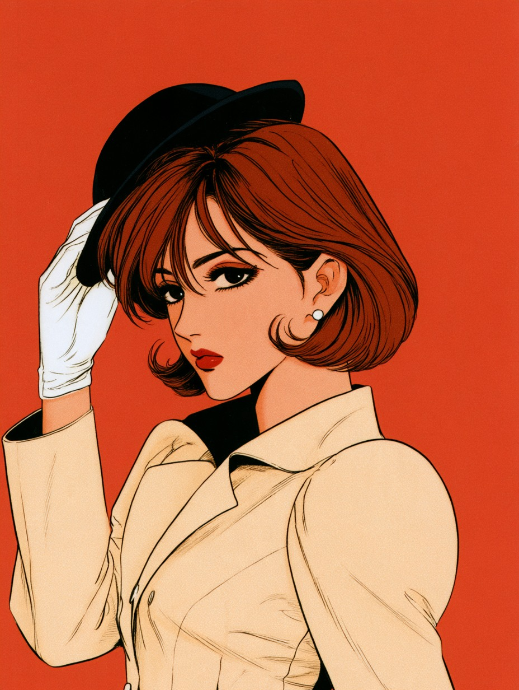
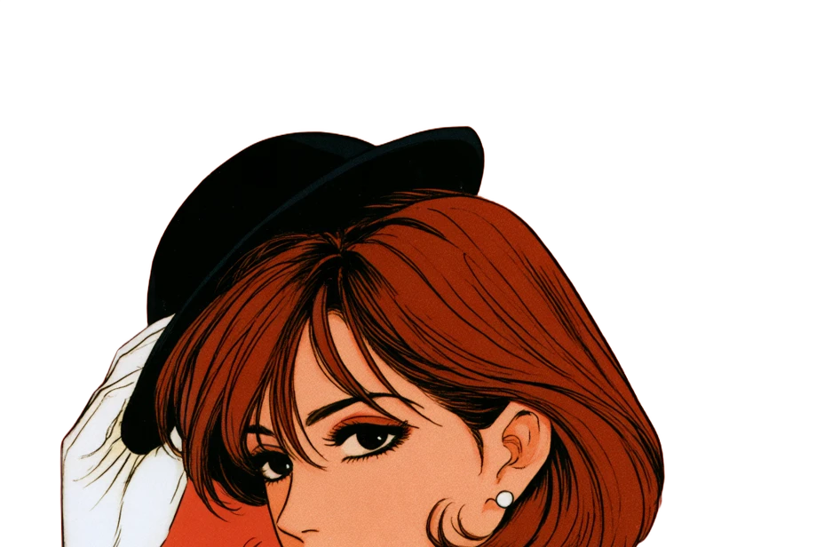
April · 1948The New York NumberPrice 50 Cents
Spring FashionsThe New Look
ÉPOQUE · No.03 · Seoul


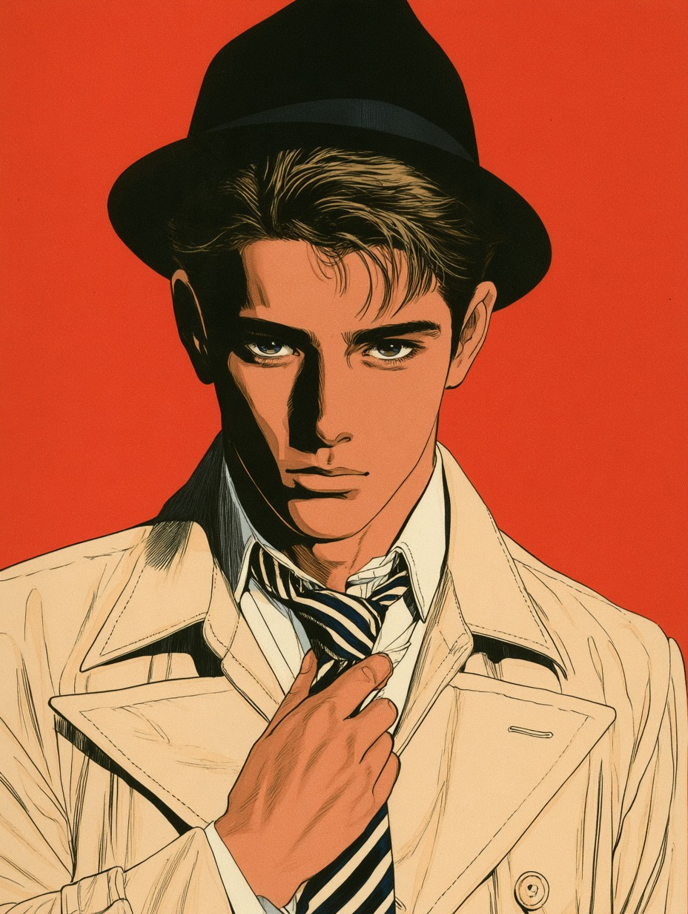
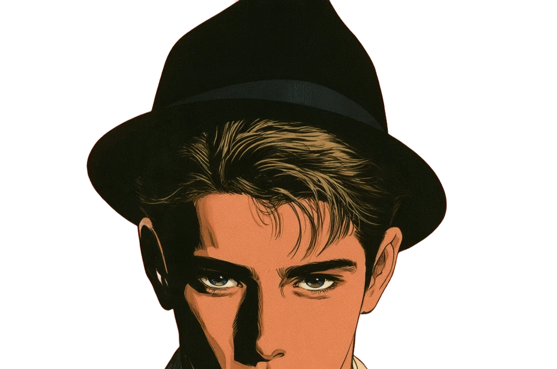
1985년 서울의 패션지가 떠난 세 번째 시간 여행. 파리에서 건너온 뉴룩, 뉴욕이 만든 아메리칸 룩, 그리고 남자들의 볼드 룩이 한 도시에서 맞선 해.
Seoul, 1985. 세 번째 출장지는 1948년의 뉴욕이다. 이번 호의 모델도 새 얼굴이다. 턱선에서 안으로 말린 적갈색 단발, 결을 살린 도톰한 눈썹, 또렷하게 그린 붉은 입술.
한 해 전 파리에서 디올이 발표한 실루엣은 ‘뉴룩’이라 불렸다. 어깨는 둥글게, 허리는 조이고, 치마는 종아리까지 부풀었다. 그해 가을 미국에 온 디올은 짧은 치마를 지키겠다는 여성들의 피켓을 만났지만, 1948년이 되자 대서양 양쪽의 매장에 뉴룩이 걸렸다.
파리는 허리를 조였고,
뉴욕은 발을 풀어 주었다.
같은 도시에서 클레어 매카델은 면 원피스와 발레 플랫으로 미국식 옷을 밀었고, 남자들에게는 그해 봄 잡지 에스콰이어가 넓게 벌어진 깃과 굵은 줄무늬 타이의 ‘볼드 룩’을 내놓았다. 6월에는 월도프 아스토리아 호텔에서 LP 레코드가 공개됐고, 7월에는 퀸스에 새 국제공항이 문을 열었다.
— ÉPOQUE 편집부, 1985년 서울
여성 룩 다섯 벌 — 5번가에서 퀸스의 새 공항까지
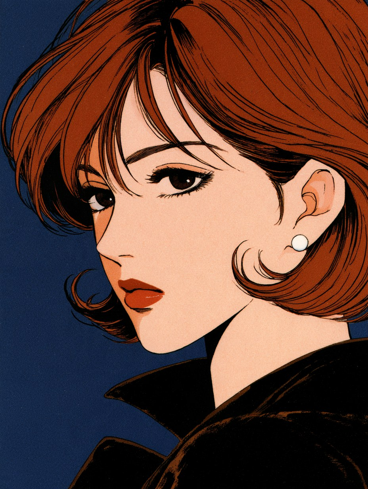
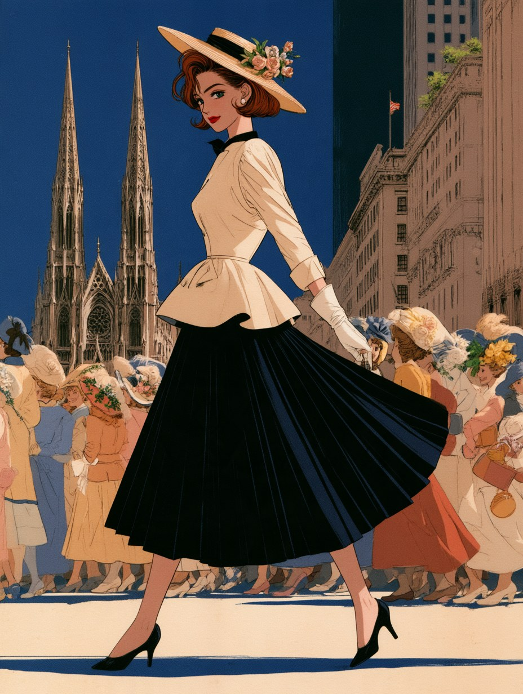
부활절 일요일, 세인트 패트릭 대성당 앞 5번가는 봄 모자를 쓴 사람들로 메워진다. 1870년대부터 이어진 이 행렬은 1948년 영화 「이스터 퍼레이드」로 다시 이름을 알렸다.
크림색 재킷은 어깨를 둥글게 깎고 허리를 조인 뒤 엉덩이에서 페플럼으로 부풀렸다. 검은 주름 치마는 종아리 중간까지 흔들린다. 전쟁 중의 각진 어깨와 무릎 길이 치마를 한 번에 지운 실루엣이다.
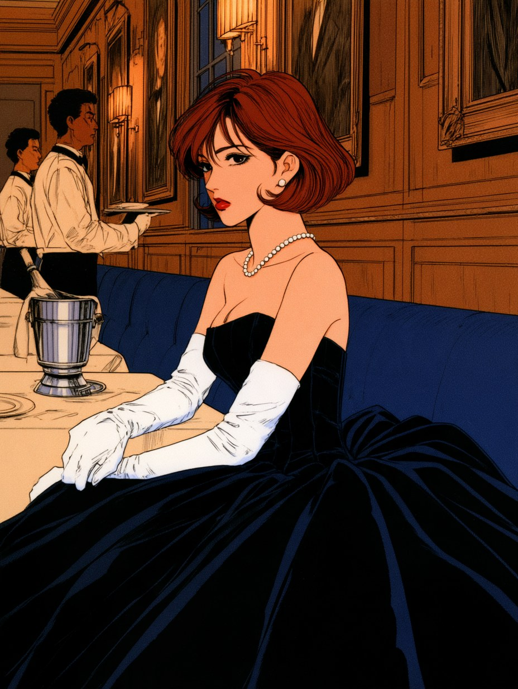
이스트 53번가 3번지의 스토크 클럽은 1930년대 말부터 50년대 중반까지 뉴욕 ‘카페 소사이어티’의 본부였다. 가장 안쪽의 컵 룸은 창문이 없고, 나무 벽에 아름다운 여자들의 초상이 걸려 있었다.
뼈대를 넣어 혼자 서는 스트랩리스 보디스, 바닥까지 부푼 검은 실크 파유 스커트, 팔꿈치 위까지 올라오는 흰 장갑. 어깨를 드러내고 허리를 조이는 뉴룩의 밤 버전이다.
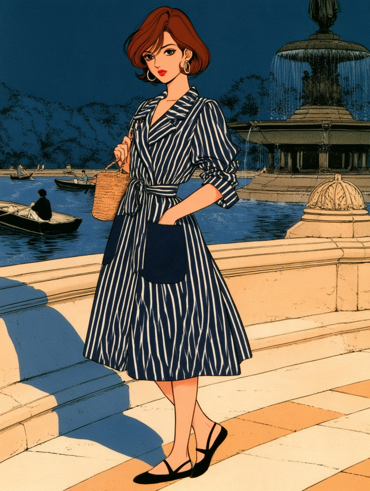
뉴룩이 허리를 조일 때, 뉴욕의 디자이너 클레어 매카델은 면 원피스와 납작한 신발로 답했다. 전쟁 중 가죽이 모자라자 발레 슈즈 회사 카페지오에 옷에 맞춘 플랫을 주문한 것이 발레 플랫의 시작이다.
앞에서 여며 묶는 랩 원피스, 손이 쑥 들어가는 큰 주머니. 백화점 로드 앤 테일러가 ‘아메리칸 룩’이라 부른 옷이다. 매카델은 1948년 니먼 마커스 상을 받았다.
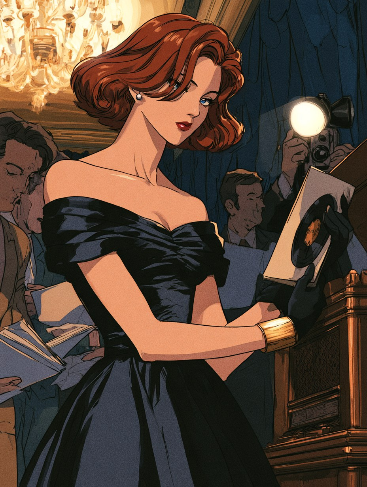
1948년 6월, 월도프 아스토리아 호텔의 기자회견장에서 한 레코드 회사가 깨지지 않는 비닐로 만든 12인치 장시간 레코드를 공개했다. 한 면에 약 23분. 교향곡 한 악장을 끊지 않고 듣게 된 LP의 시작이다.
오후의 파티에는 칵테일 드레스를 입었다. 어깨를 드러낸 검은 태피터, 조인 허리, 종아리까지 퍼지는 치마. 손목에는 넓은 금 커프.
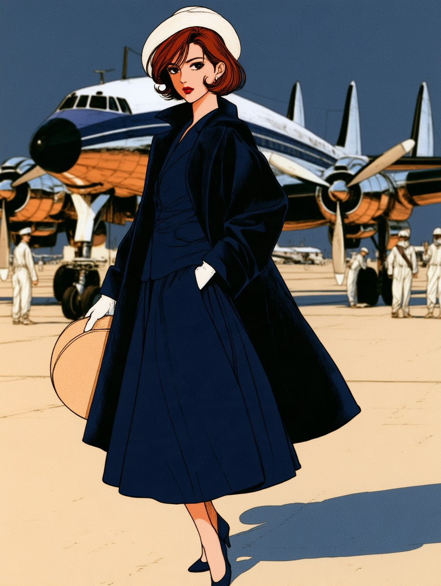
1948년 7월 1일, 퀸스의 늪지를 메운 자리에 뉴욕 국제공항이 문을 열었다. 사람들은 그 땅에 있던 골프장 이름을 따 ‘아이들와일드’라고 불렀다.
어깨에서 넉넉하게 떨어지는 네이비 스윙 코트를 열어 입고, 안에는 같은 색 재킷과 종아리 길이의 풀 스커트. 흰 밀짚모자와 흰 장갑, 둥근 모자 상자.
남성 룩 다섯 벌 — 브로드웨이에서 록펠러 센터까지
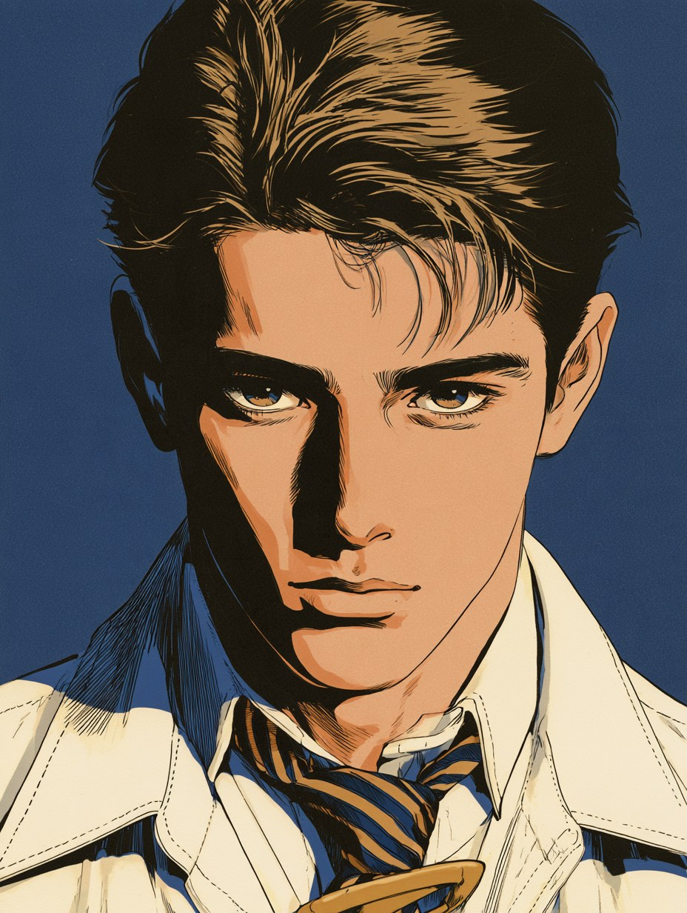
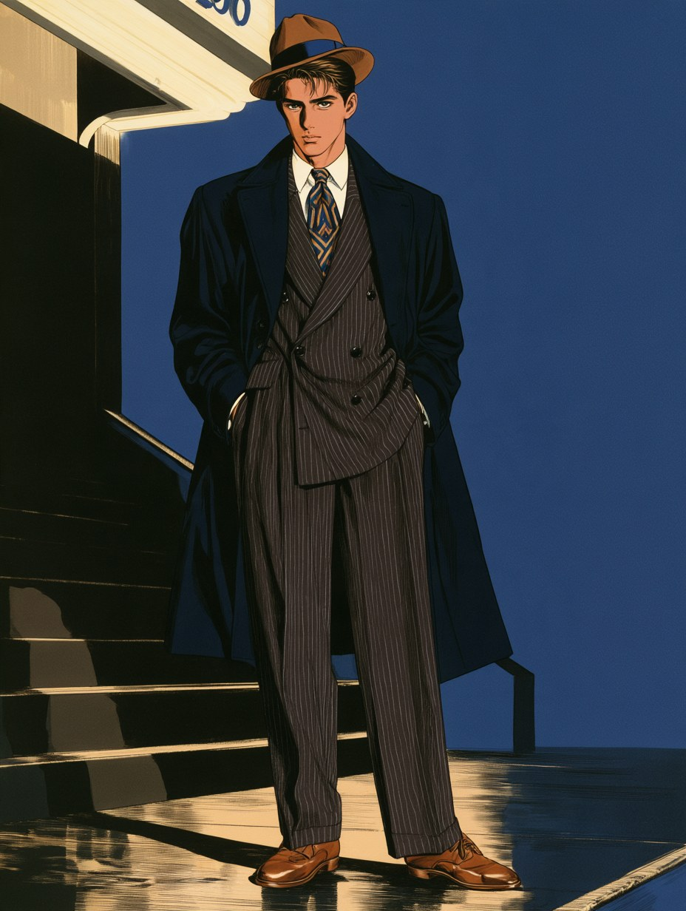
1948년 봄, 브로드웨이 1580번지 지하의 로열 루스트가 재즈 클럽으로 다시 문을 열었다. 찰리 파커와 디지 길레스피가 무대에 서면서 근처 메트로폴리탄 오페라 하우스를 빗대 ‘메트로폴리탄 보페라 하우스’라 불렸다.
볼드 룩의 밤 차림. 어깨를 넓게 세운 더블브레스트 초크 스트라이프 수트에 넓은 바지, 손으로 그린 무늬의 실크 타이, 챙 아래에 대비색 테두리를 두른 스냅 브림 페도라.
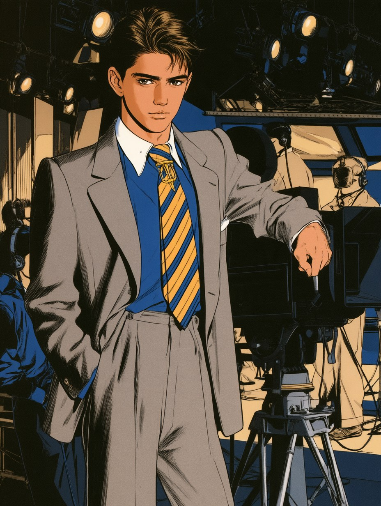
1948년 6월 8일, 록펠러 센터의 NBC 스튜디오에서 예능쇼가 생방송으로 시작됐다. 그해 미국의 TV는 100만 대도 되지 않았지만, 이 쇼를 계기로 TV가 팔려 나가기 시작했다.
그해 봄 에스콰이어는 ‘볼드 룩’을 소개하며 회색 플란넬 수트에 파란 브로드클로스 셔츠와 노랑·파랑 넓은 줄무늬 타이를 권했다. 새 셔츠의 이름은 ‘커맨드 칼라’. 깃 끝을 넓게 벌리고, 스티치를 가장자리에서 반 인치 안쪽에 굵게 넣었다.
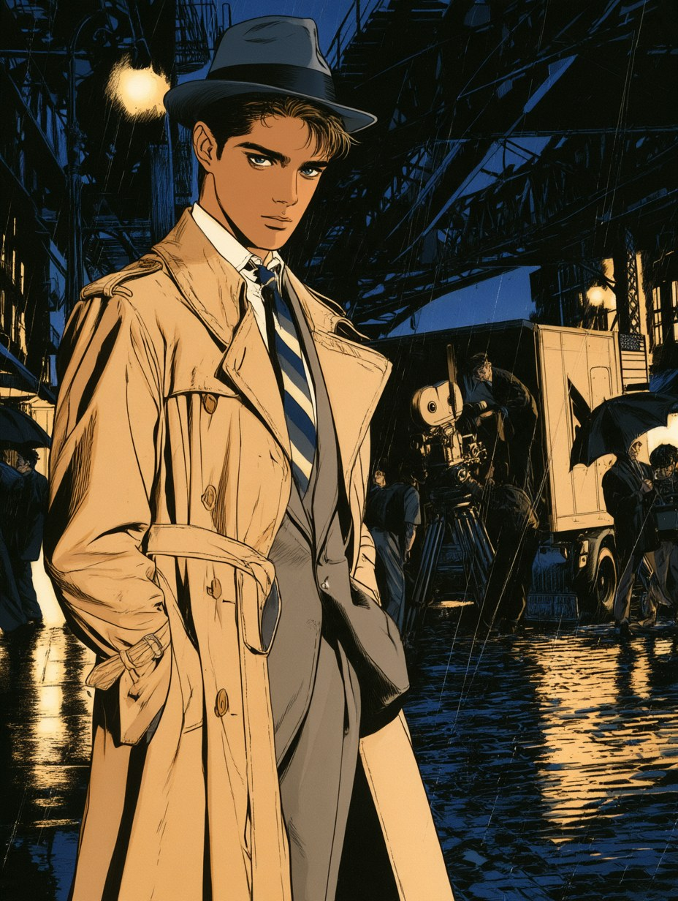
1948년 3월 개봉한 「네이키드 시티」는 할리우드의 세트 대신 뉴욕의 실제 거리에서 찍었다. 군중이 눈치채지 못하도록 카메라를 숨겨 찍은 장면도 많았다. 고가 철로 아래 젖은 자갈길에서, 트럭 짐칸에 숨긴 카메라가 돌아간다.
벨트를 맨 탄 개버딘 더블브레스트 트렌치코트, 안에는 회색 수트와 사선 줄무늬 타이, 회색 스냅 브림.
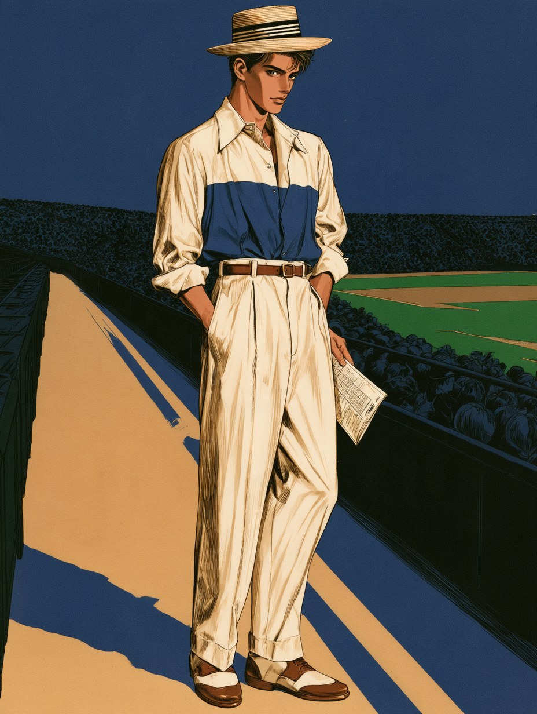
주말의 남자는 수트를 벗는다. 그래도 모자는 벗지 않았다. 1940년대 남자들은 거의 매일 모자를 썼고, 여름에는 짚으로 짠 파나마로 바꿔 썼다.
깃을 열어 입은 투톤 개버딘 스포츠 셔츠를 허리 높은 크림 개버딘 슬랙스에 넣어 입고, 갈색 가죽 벨트와 갈색·흰색 스펙테이터 슈즈를 맞췄다.
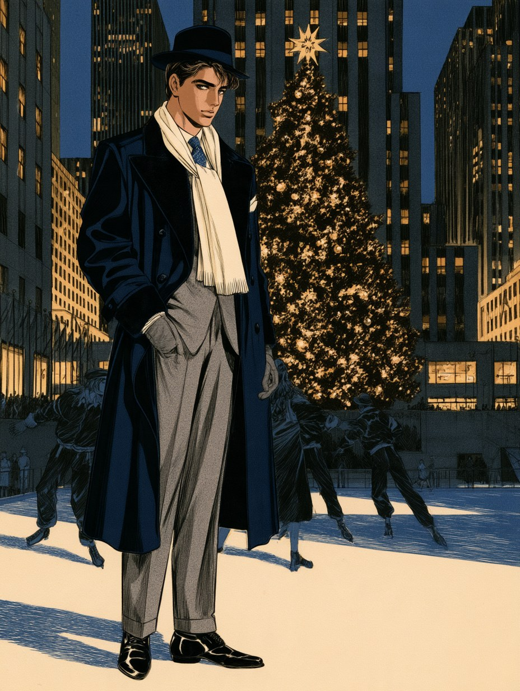
12월의 록펠러 센터. 지면 아래로 내려앉은 아이스링크 위로 거대한 크리스마스트리가 선다.
검은 벨벳 깃을 단 네이비 체스터필드 코트에 흰 실크 머플러, 회색 플란넬 수트, 검은 홈부르크. 홈부르크는 페도라보다 격식 있는 모자로, 단단한 펠트에 가장자리를 말아 올린 챙이 특징이다.
남녀가 함께 선 장면 둘 — 브루클린 브리지에서 타임스스퀘어까지
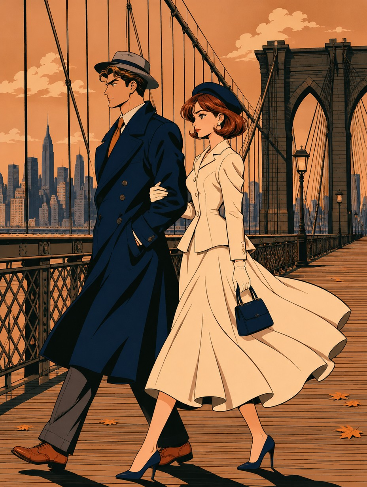
1883년에 개통한 브루클린 브리지는 차도 위에 나무 판자를 깐 보행로를 두었다. 맨해튼 스카이라인을 등지고 강을 건너는 길이다.
여자의 크림 수트는 둥근 어깨, 조인 허리, 엉덩이에서 부푼 재킷, 바람에 크게 흔들리는 종아리 길이 치마로 이루어졌다. 디올이 한 해 전 파리에서 내놓은 실루엣 그대로다. 남자는 무릎까지 내려오는 네이비 더블 오버코트에 회색 페도라를 썼다.
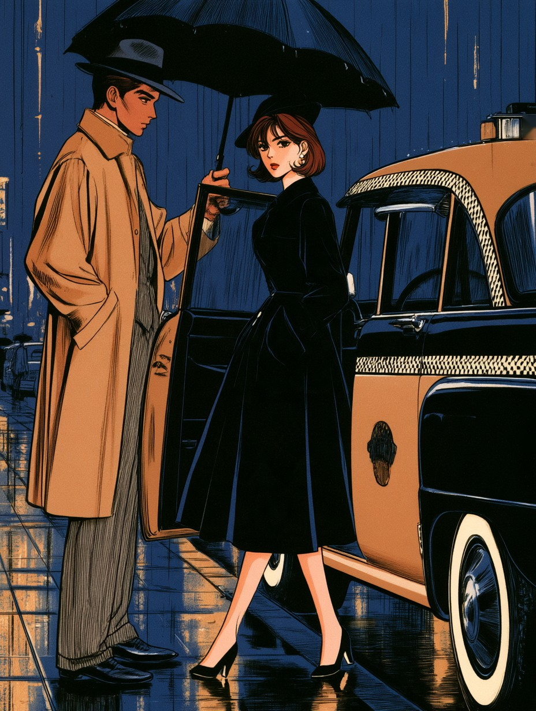
체크무늬 띠를 두른 체커 캡이 비 오는 타임스스퀘어에 선다. 네온 불빛이 젖은 보도에 번진다.
남자의 카멜 폴로 코트는 원래 영국 폴로 선수들이 경기 사이에 걸치던 옷이다. 미국 대학가를 거쳐 1940년대 도시 남자의 기본 코트가 됐다. 여자의 검은 코트는 허리를 조이고 아래를 넓게 퍼뜨렸다. 뉴룩의 코트 버전이다.
이날 파리에서 크리스티앙 디올이 첫 컬렉션을 발표했다. 둥근 어깨, 조인 허리, 부푼 치마의 이 옷에 ‘뉴룩’이라는 이름을 붙인 사람은 『하퍼스 바자』 편집장 카멜 스노였다.
미국에서는 무릎 바로 아래 길이를 지키겠다는 ‘리틀 비로 더 니’ 클럽이 생겨 디올이 방문한 도시마다 피켓을 들었다. 그래도 뉴룩은 이겼다.